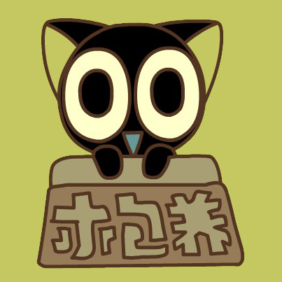
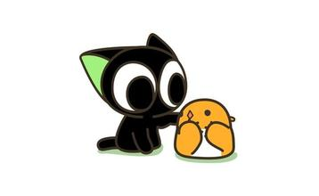
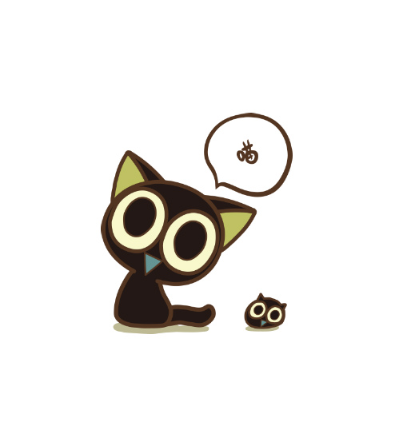
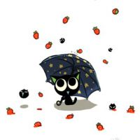
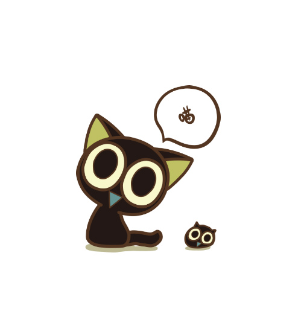
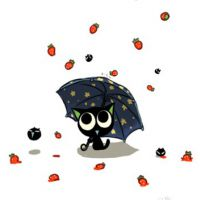
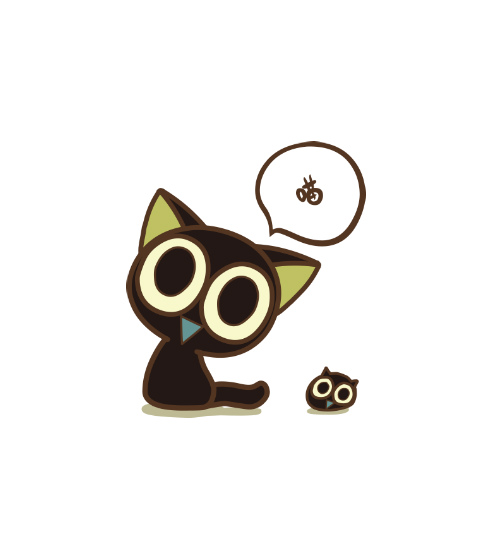
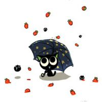

木有团队

 





呃...这个环节好尴尬，木有团队，就说下自己吧
记得我是报名截止日期的那天晚上才知道百度前端学院的。
当天晚上向几个团队提交了申请，然而没有一个团队鸟我，所以我没有正式加入过团队。。
第二天，我开始通过QQ加一些团队的群，看看有木有要我的，屡次被拒后，终于有一个团队收了我（记得队长叫陈俊）。队长首先教我用git，我当时只学会了git的安装....
后来，开始独立做一些任务，当时心比天高的我不屑做这种基础任务，直到做了几个任务后就再也做不下去了。慢慢的，群里的其他成员也因为学业，实习的缘故逐渐放弃了，原先热闹的群也安静下来
如今，我又开始学git，又开始一个一个任务的码字，我不知道自己能玩多久，只希望尽可能多完成一些任务。
2016.10.20